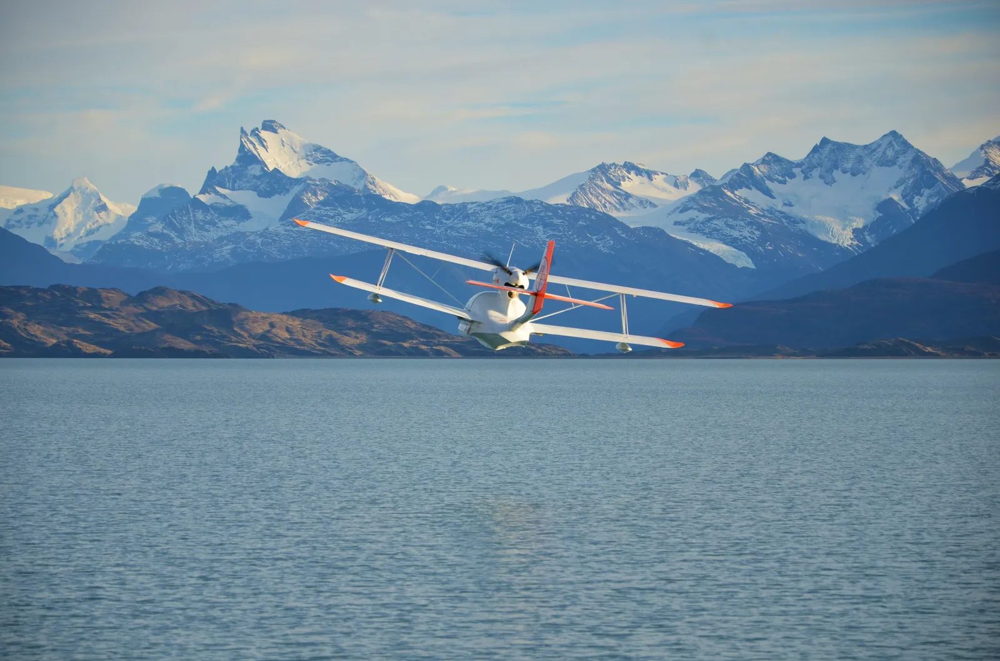
Notre mission · 02 — Explorer
Des expéditions aéronautiques pour protéger la planète
Nos avions
Deux ULM, chacun modifié sur mesure pour nos expéditions.
Réservoirs supplémentaires et fonctions additionnelles, fournis par le constructeur et par nos sponsors aéronautiques : chaque avion a été conçu pour acquérir les données scientifiques nouvelles qui permettront aux scientifiques de mieux étudier, comprendre et protéger notre planète — tout en réduisant au maximum notre impact sur l'environnement.
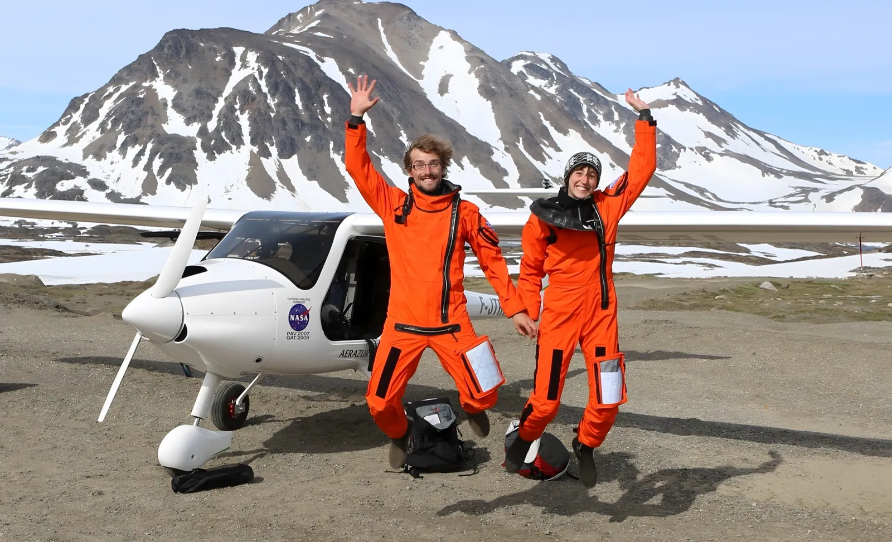
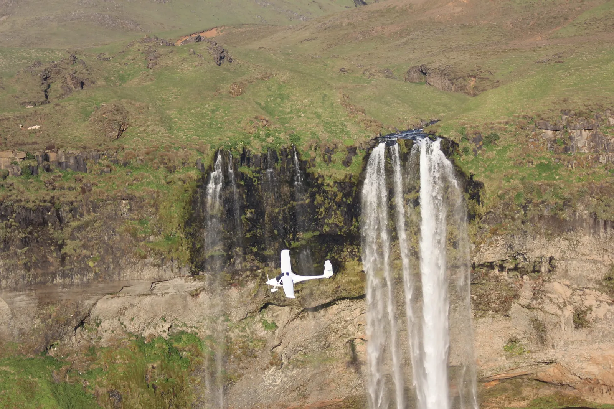
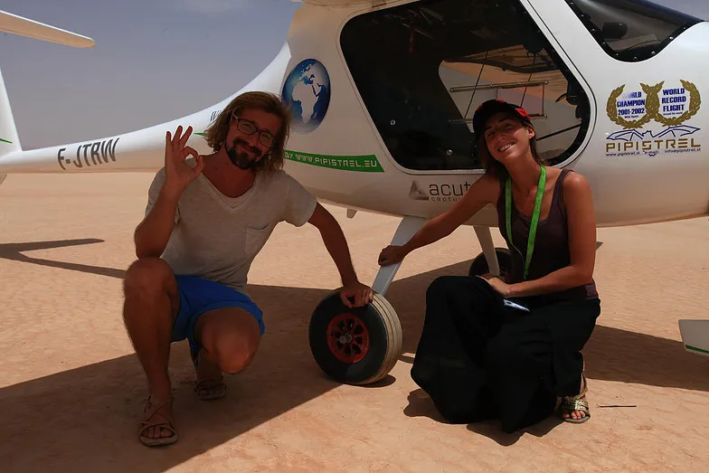
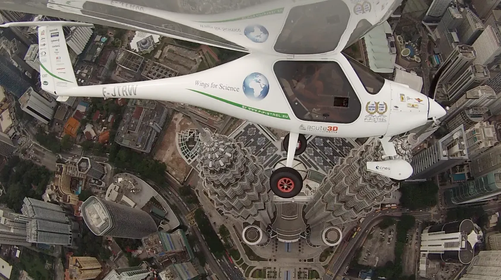
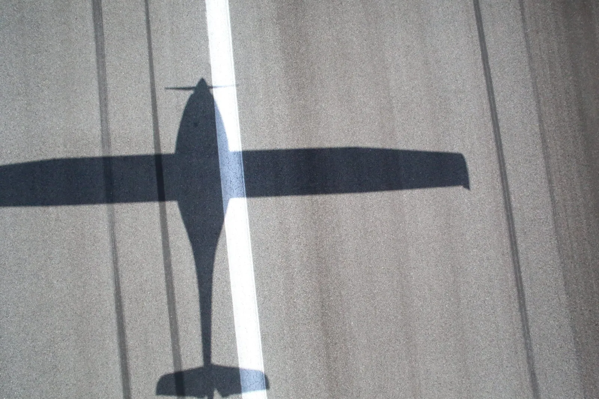
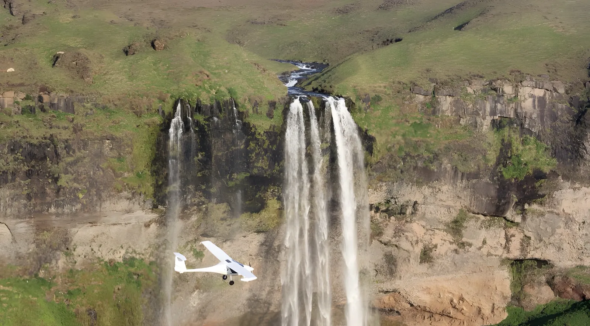
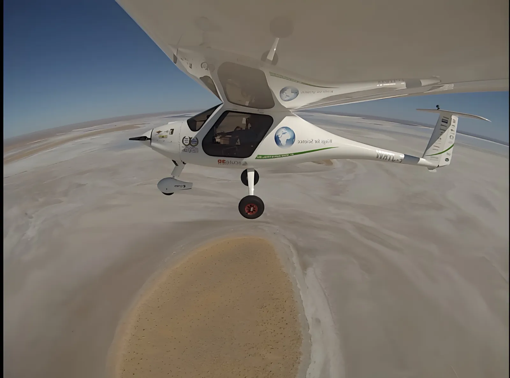
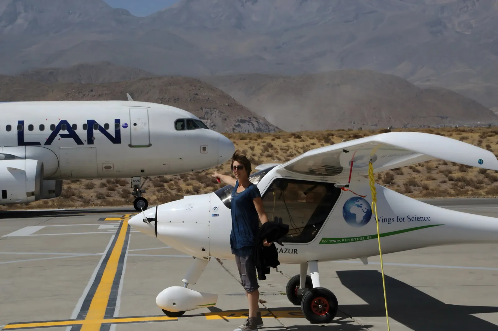
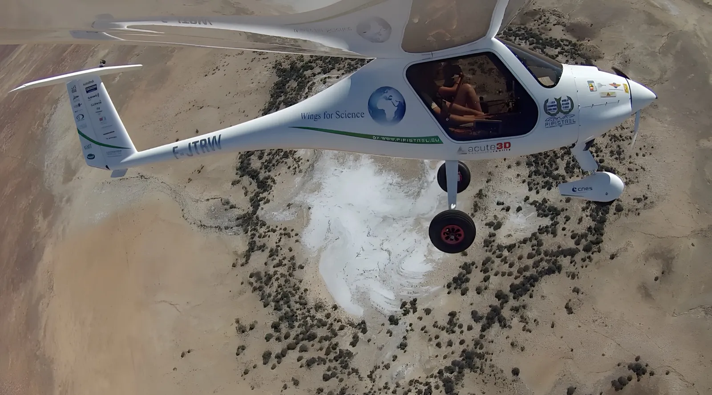


Aéronef 01 — Le tour du monde
Pipistrel Virus SW S80, entièrement modifié
Fabriqué dans l'usine Pipistrel d'Ajdovščina, en Slovénie, ce Virus a été conçu spécifiquement pour notre tour du monde par l'équipe d'ingénieurs du constructeur. Facilement pilotable et démontable, il ne consomme que 12 litres à l'heure.
- Dates
- Juin 2012 – juin 2013
- Fabricant
- Pipistrel
- Distance parcourue
- 54 000 km
- Heures de vol
- 450 h
- Pays survolés
- 50
- Étapes réalisées
- 120
- Vitesse de croisière
- 120 kts
- Consommation
- 12 L/h
Les principales étapes du tour du monde
- 1LuxembourgSE
- 2Aérodrome de Meaux-Esbly
- 3Le Touquet, France
- 4Stornoway, UK
- 5Egilsstaðir, Iceland
- 6Northeast, Iceland
- 7Vestmannaeyjar, IcelandS
- 8Reykjanesbær, Iceland
- 9Kulusuk, Greenland
- 10Narsarsuaq, Greenland
- 11Nuuk, GreenlandS
- 12Ilulissat, Greenland
- 13Iqaluit, Canada
- 14Kuujjuaq, Canada
- 15Schefferville, Canada
- 16Mingan, CanadaS
- 17Havre-Saint-Pierre, Canada
- 18Port-Menier, Canada
- 19Halifax, Canada
- 20Percé, Canada
- 21Bonaventure, Canada
- 22Saint-Antoine-de-l’Isle-aux-Grues, Canada
- 23Québec, CanadaSE
- 24Saint-Hyacinthe, Canada
- 25Burlington, VT, USA
- 26Norfolk, VA, USA
- 27Sanford, FL, USA
- 28Sebring, FL, USA
- 29Nassau, Bahamas
- 30Great Exuma, Bahamas
- 31Aguadilla, Porto Rico
- 32Sint Maarten
- 33Saint-François, Guadeloupe
- 34Scarborough, Trinité-et-Tobago
- 35Port of Spain, Trinité-et-Tobago
- 36Cayenne, Guyane françaiseS
- 37Regina, Guyane françaiseE
- 38Boa Vista, BrésilE
- 39Fonte Boa, BrésilE
- 40Tabatinga, BrésilE
- 41Leticia, Colombie
- 42Iquitos, Pérou
- 43Tarapoto, Pérou
- 44Chiclayo, Pérou
- 45Trujillo, Pérou
- 46Lima, PérouE
- 47Barranca, PérouS
- 48Pisco, Pérou
- 49Ica, Pérou
- 50Nazca, Pérou
- 51Arequipa, Pérou
- 52Arica, ChiliE
- 53Antofagasta, Chili
- 54San Pedro de Atacama, ChiliE
- 55Ovalle, Chili
- 56Santiago, ChiliS
- 57Osorno, ChiliSE
- 58San Antonio, Chili
- 59Kaiwaka, Nouvelle-Zélande
- 60Melbourne, AustralieS
- 61Broken Hill, Australie
- 62Coober Pedy, Australie
- 63Hermannsburg, Australie
- 64Kings Canyon, Australie
- 65Tnorala, Australie
- 66Uluru, Australie
- 67Wolfe Creek, Australie
- 68Fitzroy Crossing, Australie
- 69Broome, Australie
- 70Kupang, Indonésie
- 71Pulau Bajo, Indonésie
- 72Bali, Indonésie
- 73Yogyakarta, Indonésie
- 74Bandung, Indonésie
- 75Krakatoa, IndonésieS
- 76Palembang, Indonésie
- 77Kuala Lumpur, Malaisie
- 78Penang, Malaisie
- 79Phuket, Thaïlande
- 80Yangon, Birmanie
- 81Kolkata, Inde
- 82Khajuraho, IndeE
- 83Ahmedabad, IndeE
- 84Karachi, PakistanE
- 85Mascate, Oman
- 86Dubaï, EAU
- 87Sir Bani Yas, EAU
- 88Abu Dhabi, EAU
- 89Riyad, Arabie Saoudite
- 90Amman, JordanieSE
- 91Pétra, JordanieS
- 92Aqaba, JordanieS
- 93Samos, GrèceS
- 94Corfou, Grèce
- 95Ajdovščina, Slovénie
- 96Cannes, France
- 97Le Bourget, France (ARRIVÉE)
Arrivée au Bourget
Atterrissage officiel au Salon international aéronautique du Bourget
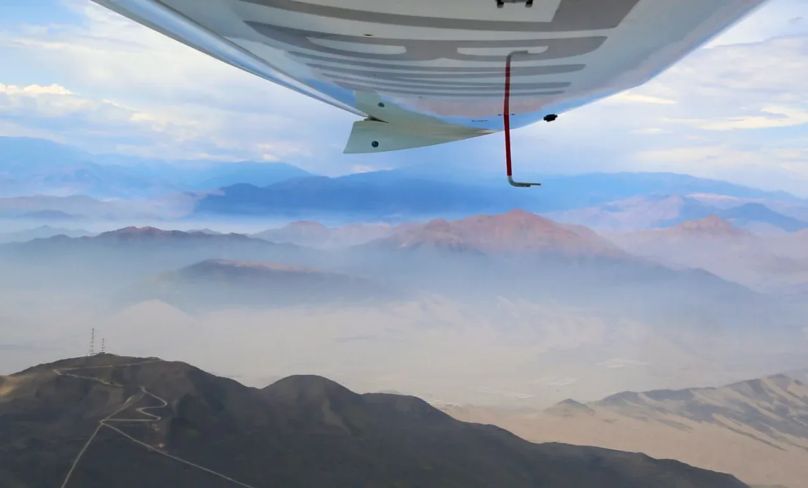
Cordillère des Andes · ChiliDepuis le cockpit, la cordillère apparaît dans la brume. Ces reliefs isolés abritent des biotopes que la science commence à peine à cataloguer.
Aéronef 02 — La traversée des Amériques
Super Pétrel LS, hydravion amphibie
Notre « maison volante et flottante », dont nous avons pris possession au Brésil, près de São Paulo. De janvier 2016 à novembre 2017, elle nous a portés d'Ushuaïa, au bout de la Terre de Feu, jusqu'aux Grands Lacs canadiens. Son design, une baleine, a été choisi à partir des propositions d'une classe d'élèves de primaire qui suivait l'expédition.
- Dates
- Janvier 2016 – novembre 2017
- Fabricant
- Scoda Aeronáutica (ex-Edra Aeronáutica)
- Trajet
- Ushuaïa → Grands Lacs
- Type
- Hydravion amphibie
- Vitesse de croisière
- 90 kts
- Consommation
- 18 L/h
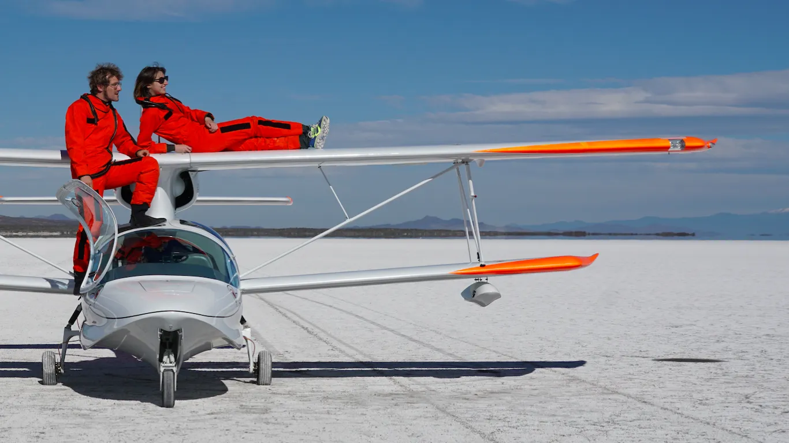
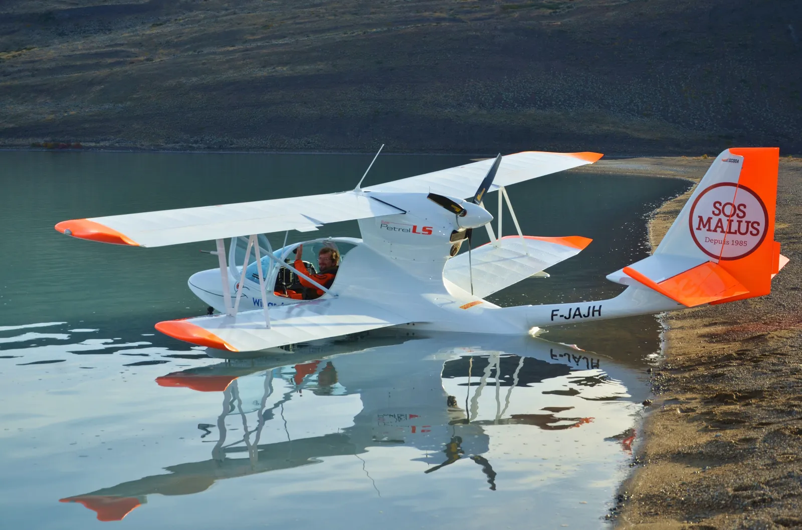


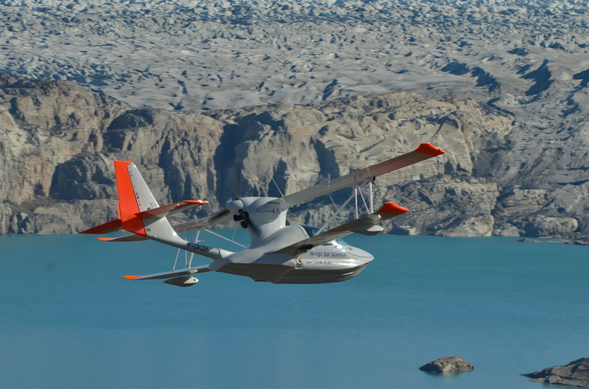
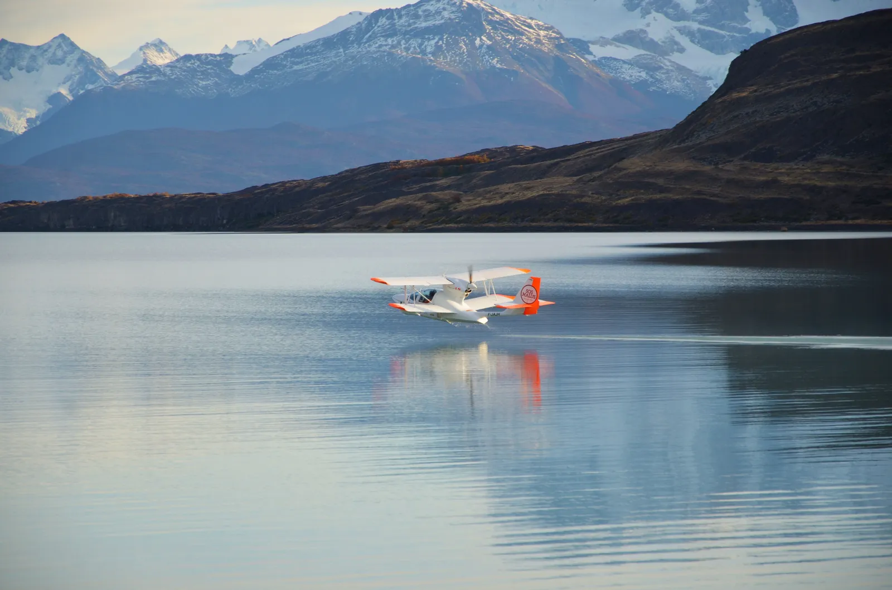
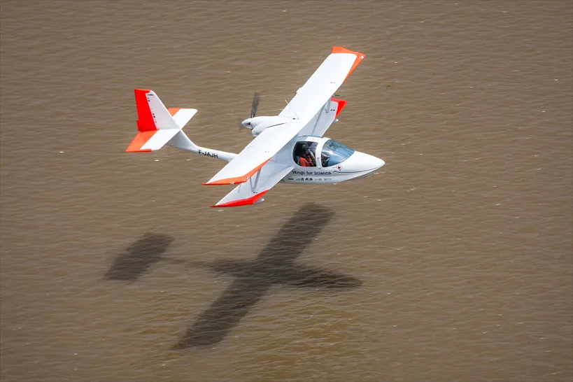
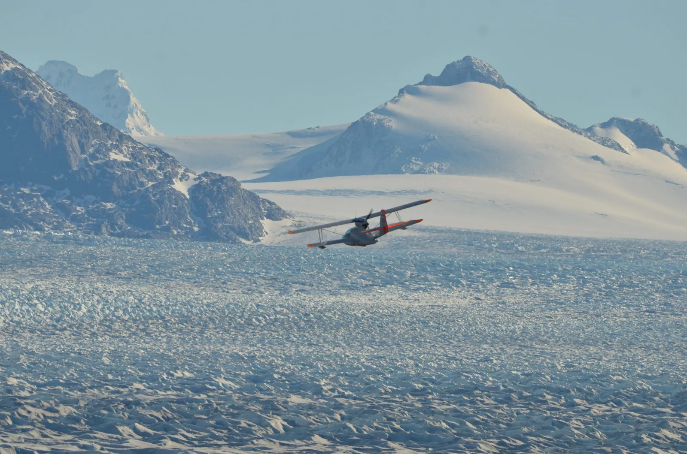
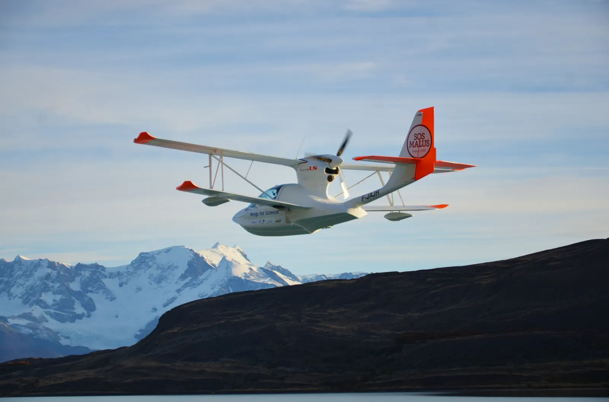
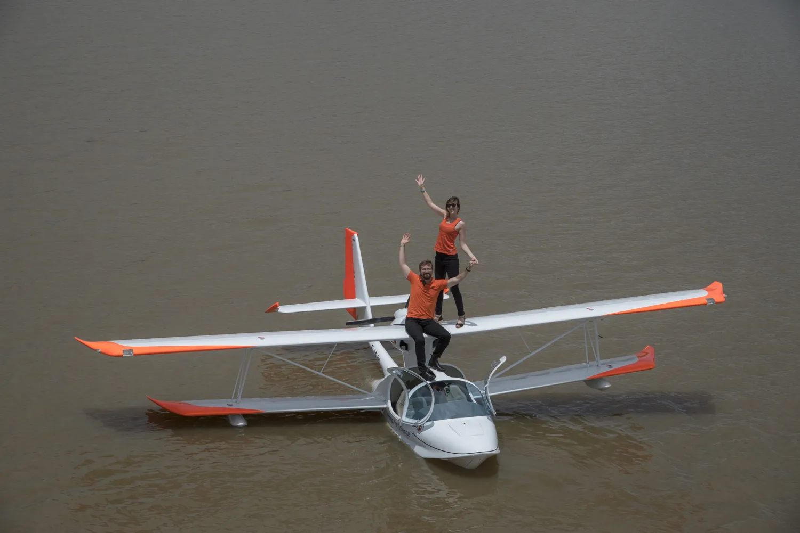
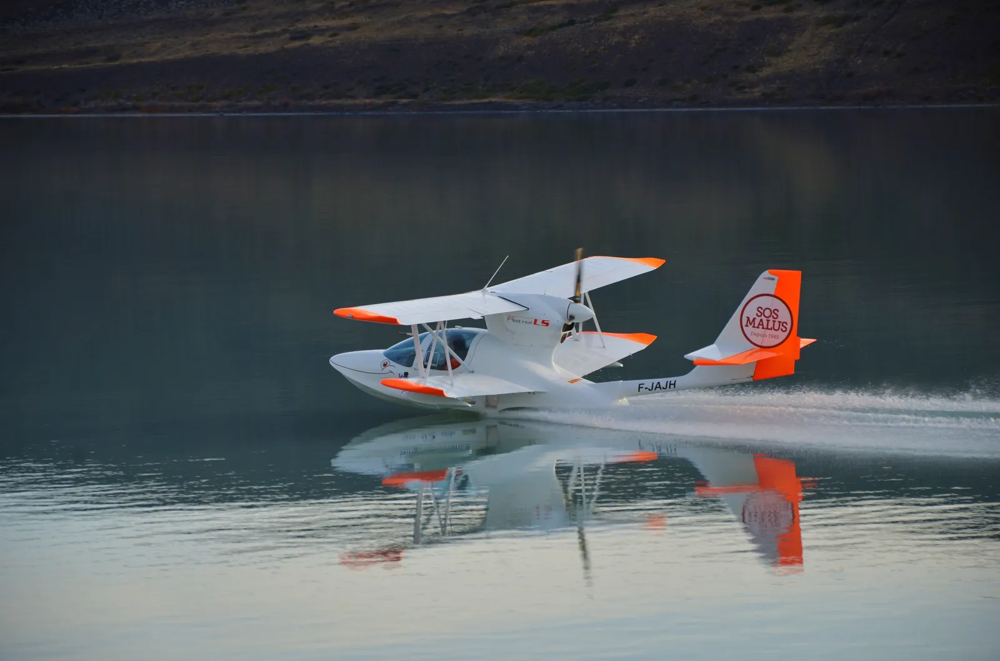


Équipés sur mesure
Avec nos sponsors aéronautiques
Hélice, GPS, roues et freins, casques, matériel de survie, secours d'urgence, assurances : chaque avion a été préparé pour voler loin et longtemps, au-dessus des océans et des déserts.


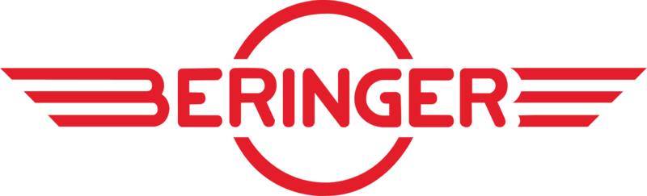


Les trajets réalisés
Près de 100 000 km au-dessus de la planète
Tour du monde (Pipistrel Virus) Traversée du Pacifique (bateau) Traversée des Amériques (Super Pétrel)

Page suivante · 03